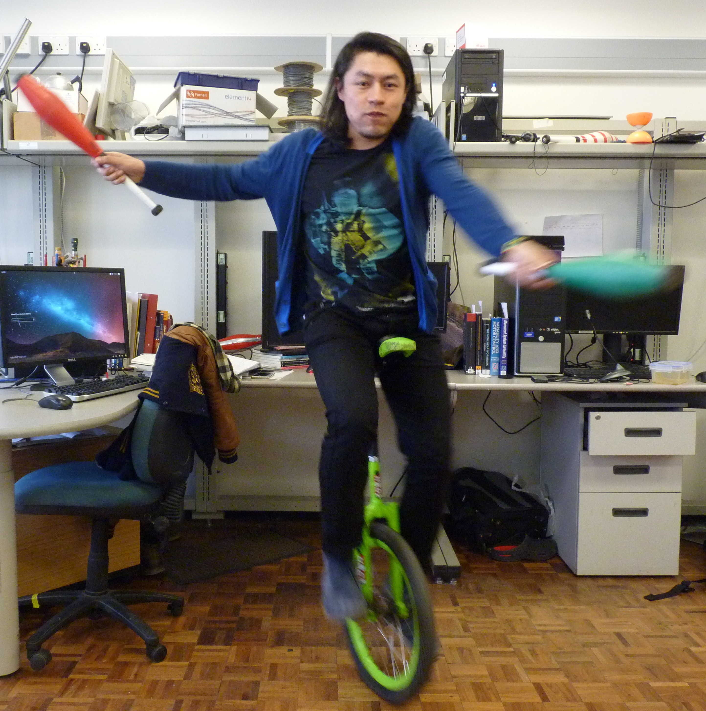

Miguel
Xochicale
Curriculum vitae

+44 (0) 121 41 47511
perez.xochicale@gmail.com
http://mxochicale.github.io/
Edgbaston
Birmingham B15 2TT
United Kingdom
Education
11/2014 - Present
Ph.D. in Electronic, Electrical and Computer Engineering
, University of Birmingham, UK.
Thesis title:
“Automatic Indentification of Movement Variability.”
Advisors:
Professor Chris Baber
and
Professor Martin Russell
09/2004 - 09/2006
M.Sc. in Electronics
Instituto Nacional de Astrofísica, Óptica y Electrónica (INAOE), Puebla, México
Thesis title
“Digital Filter FIR with less multipliers”
Advisor:
Gordana Jovanovic Dolecek
08/1999 - 09/2004
B.Eng. in Electronics
Instituto Tecnológico de Puebla, México
Thesis title
“Speed control of a Robot of two degrees of freedom.”
Advisor: Esteban Torres Leon
UPDATING
11/2009 - current
...
...